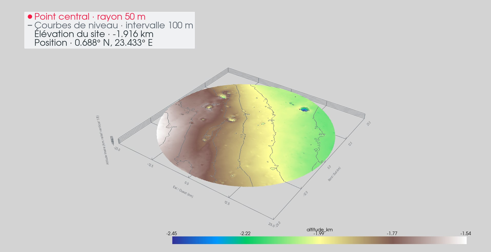

FACE VISIBLE · RÉGION ÉQUATORIALE
La base de la Tranquillité

Tiré du simulateur CisLunar
Le site d’Apollo 11, dans la mer de la Tranquillité, rappelle qu’une liaison directe est possible depuis la face visible. La Terre y est bien plus haute dans le ciel qu’au pôle Sud.
Ce que cela change pour une mission
À retenir : un horizon dégagé aide, mais antennes, puissance et stations terrestres restent indispensables.